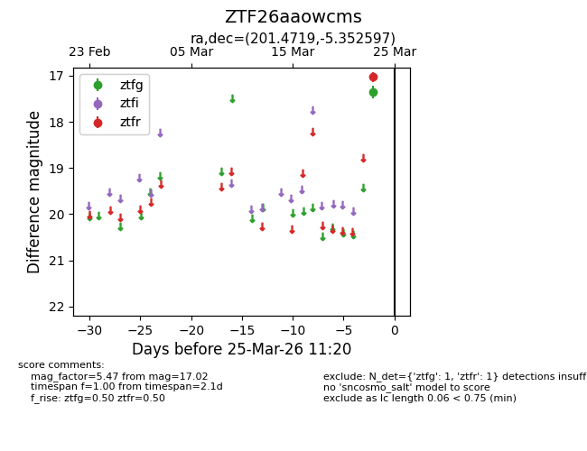
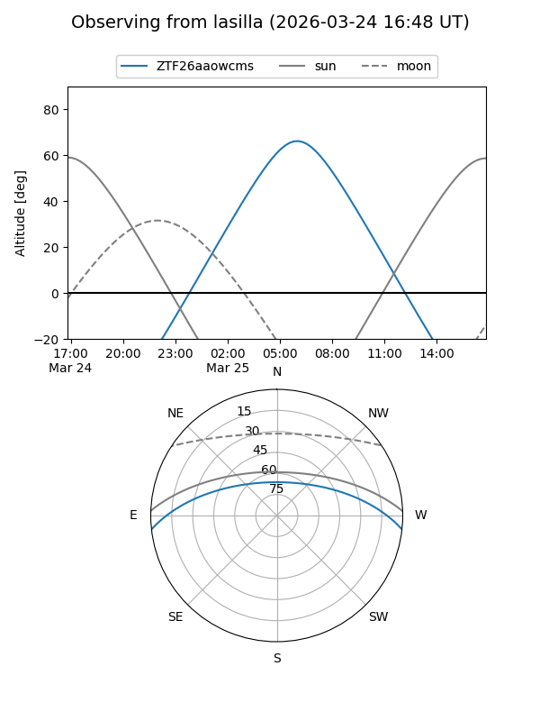
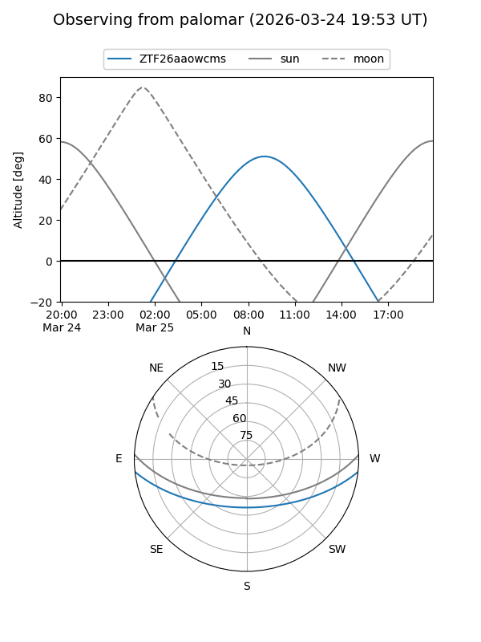

ZTF26aaowcms
Target ZTF26aaowcms at 2026-03-25 11:24
Aliases and brokers:
FINK: link
Lasair: link
ALeRCE: link
alt names
ZTF26aaowcms (ztf,fink_ztf)
Coordinates:
equatorial (ra, dec) = 201.4719,-5.35260
equatorial (HMS+DMS) = 13:25:53.27,-05:21:09.35
galactic (l, b) = (318.5907,+56.46817)
Flags:
Photometry:
last ztfg=17.35, ztfr=17.02
1 ztfg, 1 ztfr detections
Lightcurve

Visibility


Additional plots